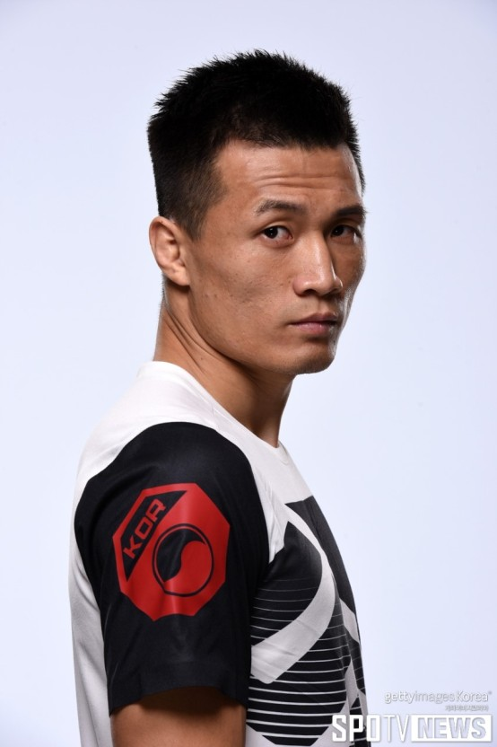

강사우의 ufc선수 소개
Conor McGregor
Dustin Glenn Poirier
정찬성

정찬성(aka.코리안 좀비)
이종격투기선수
출생:1987년 3월 17일, 경상북도 포항
소속사:AOMG
학력:경운대학교 사회체육학과
수상:2011년 ESPN 올해의 서브미션상
경력:2020.10 UFC 파이트 나이트 180 (VS 브라이언 오르테가) 패
유투브 채널